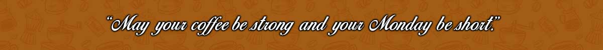

|  | ||||||
 |
 |
 |
 |
|||
 |
||||||
PREPARACIÓN
La preparación de un café corto, también conocido como espresso, comienza con la selección de granos de alta calidad. Estos granos se tuestan y se muelen finamente para obtener la consistencia adecuada. Utilizando una máquina de espresso, el café molido se compacta en un portafiltro y se extrae con agua caliente a alta presión durante unos 25 a 30 segundos. El resultado es una taza pequeña de café concentrado, con un sabor intenso y una capa de crema dorada en la superficie